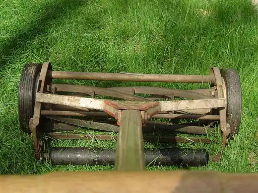
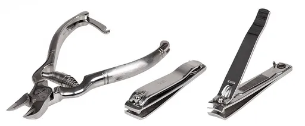
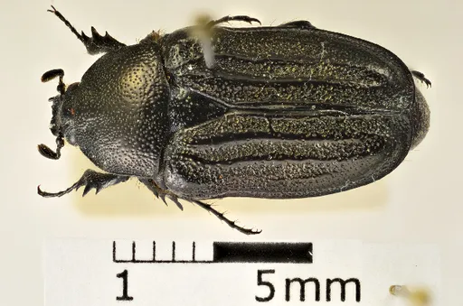
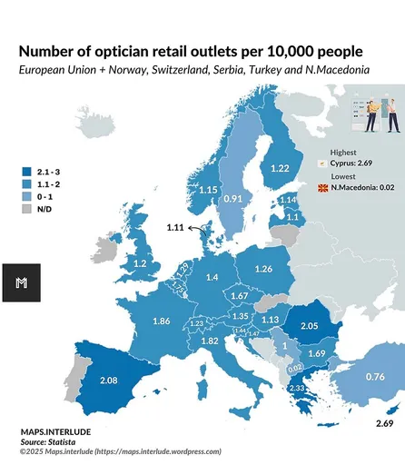
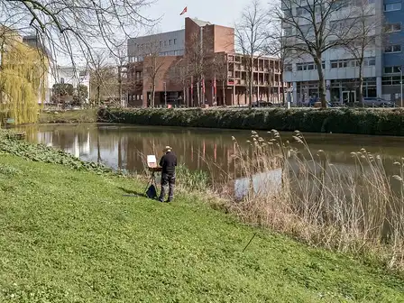
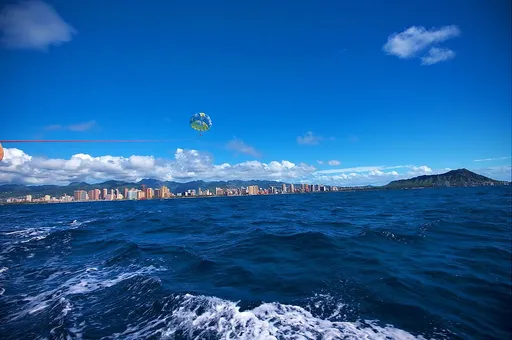
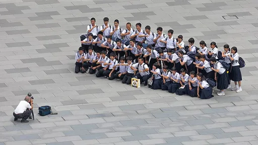

Reject an image by adding its slug to public/charades/charades-actions/reject.txt (append ! to keep it word-only), then re-run node scripts/genimages.mjs.
Mountaineer mountaineer CC BY 4.0 · Mattsjc · source

Mowing the lawn mowing-the-lawn CC BY 2.0 · Halley from Boston · sourceMusician musician CC BY-SA 3.0 · Manfred Werner - Tsui · source

Nailing nailing Public domain · Evan-Amos · source

Navigator navigator CC BY 3.0 · Christian Moeseneder, MIC · sourceNewscaster newscaster Public domain · WABC-TV · sourceNurse nurse Public domain · Oscar Bernader Bengtsson (b1888) · source

Optician optician CC BY 4.0 · Maps.interlude · sourceOrchestra conductor orchestra-conductor CC0 · Leirea578 · source
Paddleboarding paddleboarding CC BY-SA 4.0 · Matthew T Rader · source

Painter painter CC BY-SA 4.0 · Matti Blume · source

Parasailing parasailing CC BY-SA 2.0 · Sujohn Das from Seattle, USA · sourcePharmacist pharmacist Public domain · Unknown authorUnknown author · source

Photographer photographer CC BY-SA 4.0 · Basile Morin · source